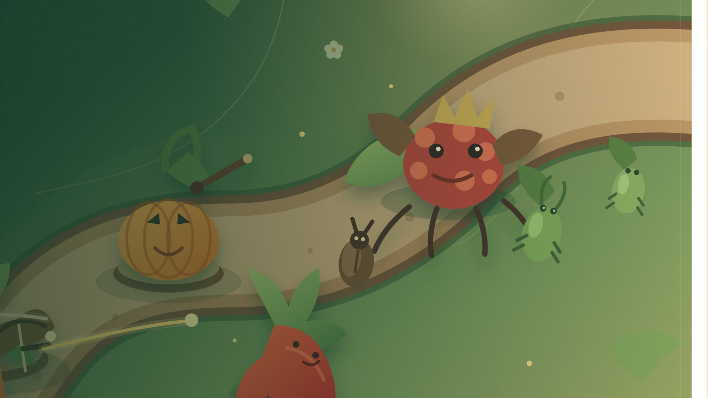
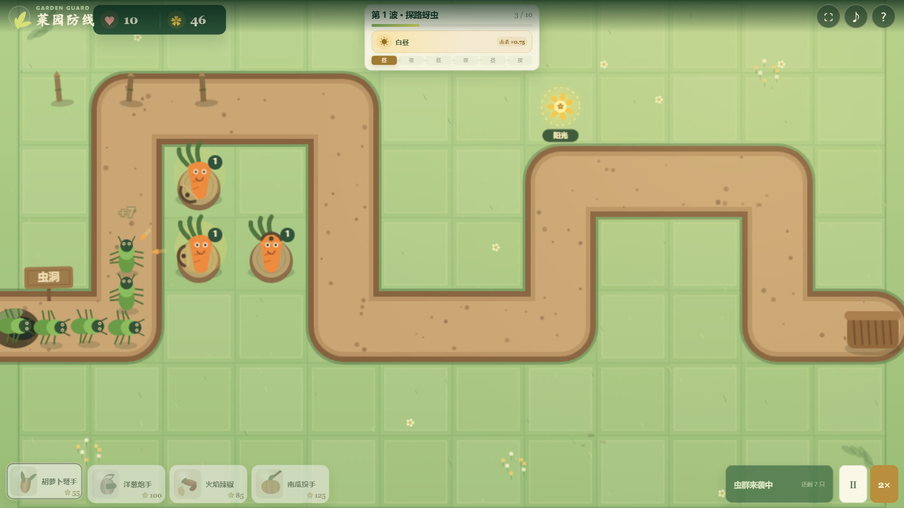
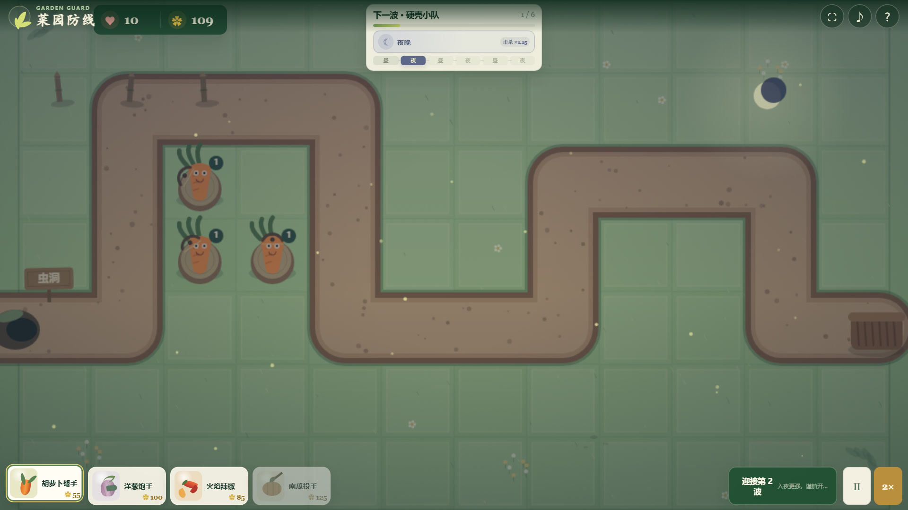
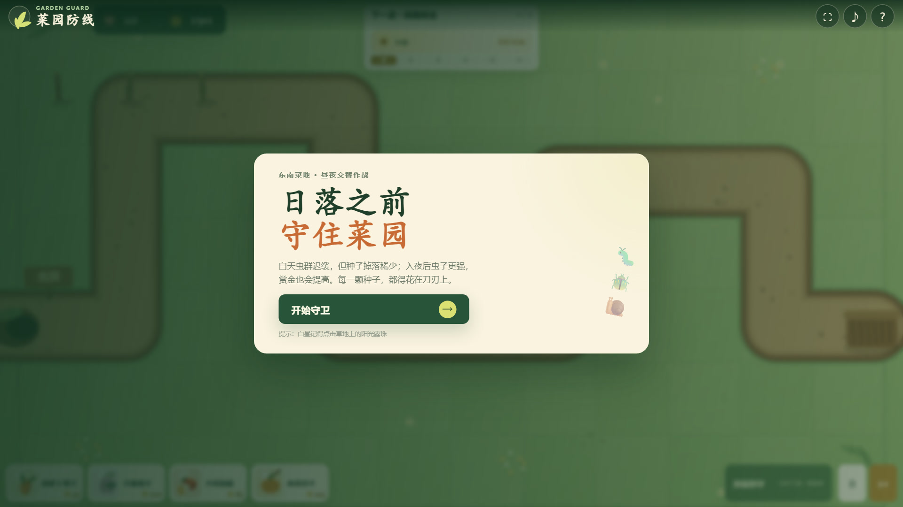

白昼收集
敌人强度降低，击杀种子减少；草地会间歇出现可点击的阳光露珠。

ABOUT THE GAME
在土路两侧种植不同蔬菜。虫子会沿固定路线前往菜篮，玩家需要结合射程、 范围和持续伤害安排防线，并在波次之间决定种植、升级还是保留资源。
敌人强度降低，击杀种子减少；草地会间歇出现可点击的阳光露珠。
虫群耐久和速度提升，击杀收益随之提高，需要更稳定的火力覆盖。
速射、范围爆破、灼烧和远程重击分别对应不同的战斗距离与虫群组合。
VEGETABLE DEFENDERS
从前期铺场到中后期升级，不同蔬菜承担不同职责。每座蔬菜塔可升至 3 级，也可以回收以调整布阵。
GAMEPLAY TRAILER
LANDSCAPE GAMEPLAY
手机横屏时，资源状态、昼夜信息和蔬菜栏会按照触控方式重新排列。



RELEASE STATUS
当前页面用于展示游戏玩法与开发进度，暂不提供公开下载或网页试玩。 正式开放时间将在取得游戏出版物号并通过发行审核后另行公布。